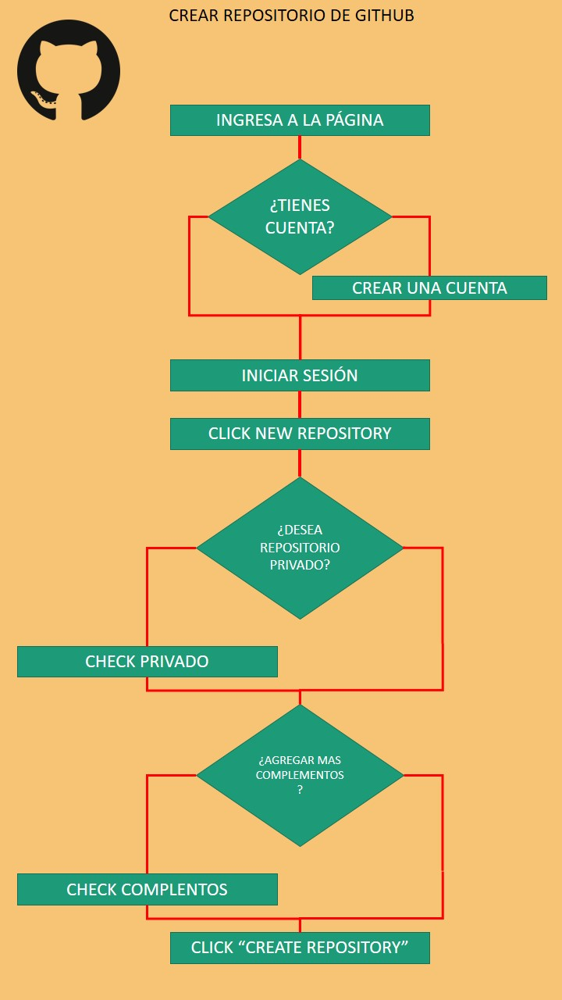
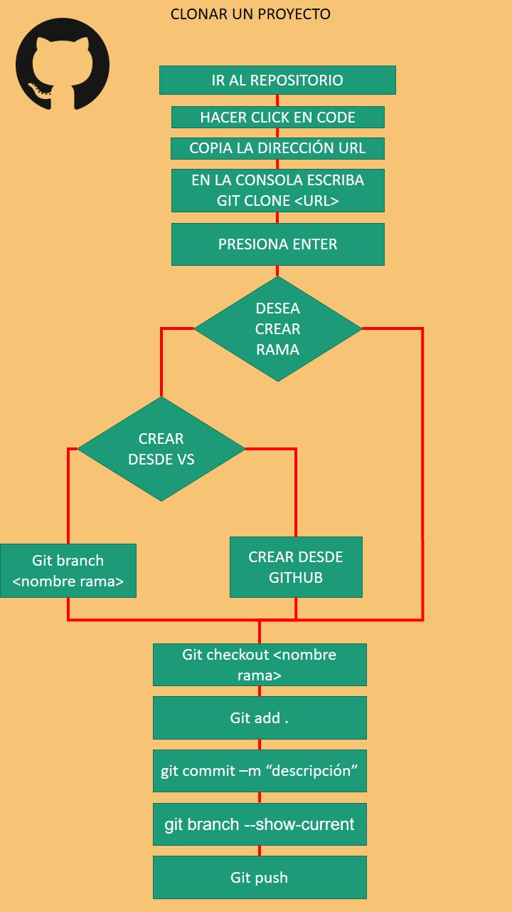
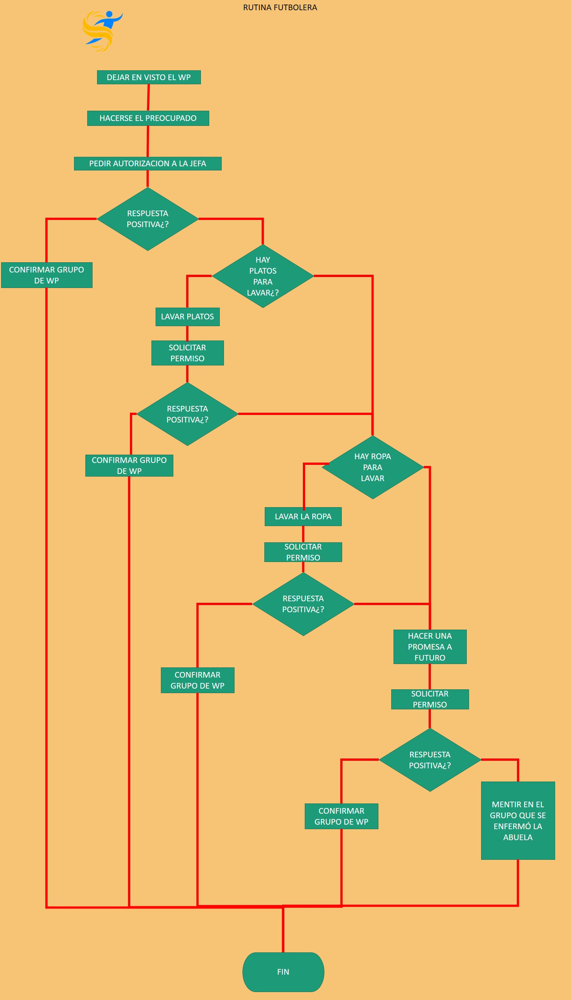

×

Crear un repositorio en github
- Ingresa a la página de github
- ¿Tienes cuenta?
- NO: Crear cuenta
- Iniciar sesión
- Click new respository
- ¿Desea crear repositorio privado?
- SI: Check privado
- ¿Agrega mas complementos?
- Si: Check complementos
- Crear repositorio

×

Clonar un proyecto
- Ir al repositorio
- Hacer click en code
- Copiar la dirección
<url>
- En la consola escriba git clone
<url>
- Presiona Enter
- ¿Desea crear una rama?
- SI:
- ¿Desea crear desde vs?
- SI: git brancha
<nombre de la rama>; No: crear desde github
- git checkout
<nombre rama>
- git add .
- git commit -m "descripcion"
- Verificar que estoy en la rama correcta
- git push

×

Rutina futbolera
- Dejar en visto el WP
- hacerse el preocupado
- Pedido de autoización
- ¿respuesta positiva?
- SI:confirmar;
NO:
- ¿Hay platos para lavar?
- SI: lavar los platos y efectuar nueva solicitud; NO: continuar (subproceso 5)
- ¿Respuesta positiva?
- SI: Confirmar grupo de WP; NO:Continuar (subproceso 5)
- ¿Hay ropa sucia?
- SI: lavar los platos y efectuar nueva solicitud
- ¿Respuesta positiva?
- SI: Confirmar grupo de WP;
NO:
- Hacer promesa a futuro
- Efectuar nueva solicitud
- ¿Respuesta positiva?
- SI: Confirmar grupo de WP; NO: Mentir en el grupo que se enfermó la abuela